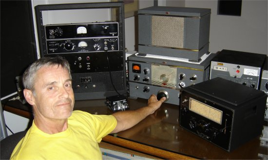
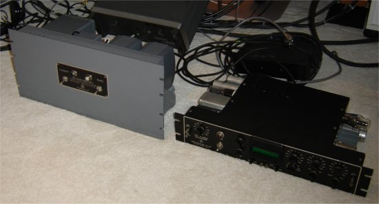
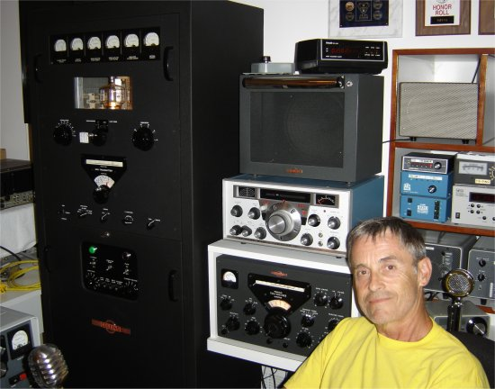
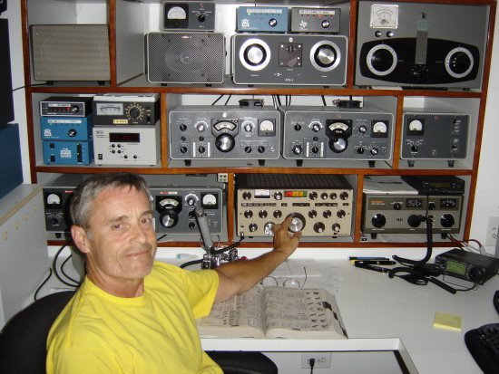

|

HV
supply and scope ready for installation into a larger rack
(Yes,
the gray color is original Millen!)

My
"big" AM station

...
and SSB ...

I enjoy restoration; especially Millen, Collins
and Central Electronics.
My home is located in Great Falls, VA., a few
miles West of Washington, DC, where I have a few acres and plenty
of room for antennas. I have three Bencher Skyhawks and a 2-element
40 stacked on a rotating tower. For 80 and 160 I use a pair of
phased HyTowers.
I
would be pleased to have you visit my website!
73,
Bob, WØYVA
|